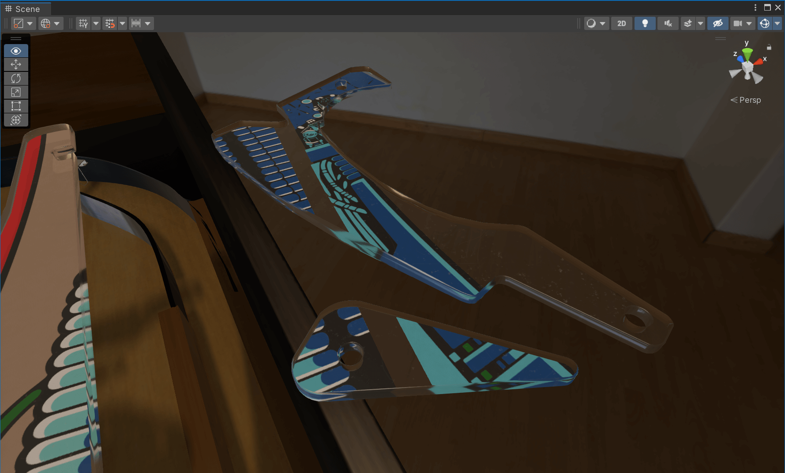
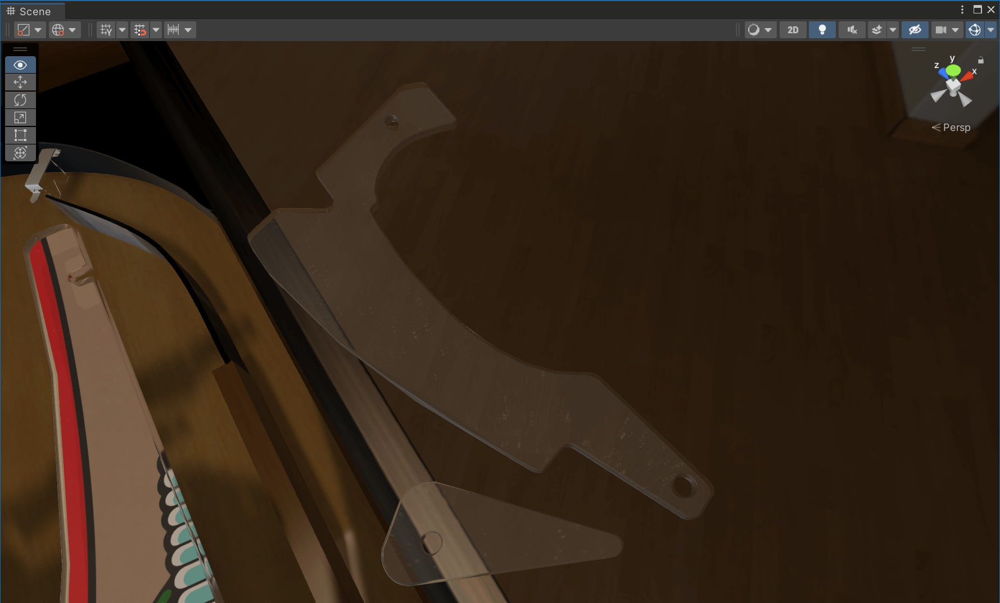

Import Into Unity
Step 1: Import the FBX
Open your scene in Unity and use the Project window to navigate to where you've exported your FBX.
Note
We recommend storing models at Assets/<Table Name>/Models, and texture at Assets/<Table Name>/Textures. If you haven't already, copy Plastics-01.png as Plastics.png and Plastics.fbx into the corresponding folders.
Drag Plastics.fbx under the Playfield GameObject. Scale and rotate them until they have the approximate size.

We recommend unpacking the prefab. Unpacking will still reference the meshes of your FBX, but not the position within the FBX. That way you're more flexible in positioning the plastics, and should you move them in Blender later you won't need to re-position them in Unity. In order to do that, right-click on the Plastics GameObject and select Prefab -> Unpack.
Step 2: Setup Assets
First, let's configure how the texture is imported. In the Project window, navigate to Assets/<Table Name>/Textures where you saved Plastics.png, and select it. In the Inspector window, check the option Alpha Is Transparent. Depending on how large you've exported it, you might need to update Max Size as well, in our case we'll use 4096 × 4096. When you're done, hit Apply at the bottom.
Next, we'll create a material of our bottom surface. In the Project window, navigate to Packages/Visual Pinball Engine (HDRP)/Assets/Art/Materials/Default/Plastic, select Plastics Decal, hit Ctrl+C. Navigate to your project's Assets/<Table Name>/Materials folder, and press Ctrl+V.
Select the copied Plastics Decal. In the inspector, under Surface Inputs, click on the little circle next to Base Map, and type "Plastics" in the search box. Select the imported texture you've created and close the picker dialog.
Step 3: Assign the Materials
Now we have our materials ready, let's assign them to our plastics.
Select all plastics GameObjects. In the inspector, under Mesh Renderer -> Materials, you should see three empty elements. These are our material slots. Drag the Plastics Decal material you've just updated into the last slot (Element 2).
Then, in the Project window, navigate to where you were before, to Packages/Visual Pinball Engine (HDRP)/Assets/Art/Materials/Default/Plastic. Drag Plastics Edges to Element 0 and Plastic Top to Element 1.
Note
For some reason, material slots might be different depending on the object, so you'll need to verify if all the plastics look correct, and shuffle the material slots if necessary (you can just re-order them under Materials).
If all went well, it should look like that!
Transparent Plastics
If you had completely transparent plastics without any artwork, you'll notice that they are still textured:

In order to fix that, replace the Plastics Decal material with the Plastics Top material, and it will look correct:

Step 4: Alignment
Use the Scene View to move each plastic to the right position. You'll also need to rotate them and probably resize them as well.
Tip: Once you're happy with all positions, set height of the plastic of all objects to the same value by selecting them in the Hierarchy and putting a Z-value of Scale in the Transform panel of the Inspector.
That's It!
If you came across an error or have a better way of achieving this, don't hesitate to click on the Improve this Doc button on the top right side (documentation).